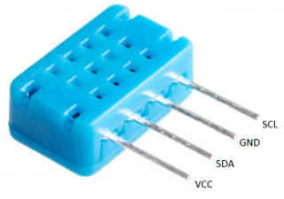

Contexte du projet
Dans ce projet, l’idée était de créer un système de remontée de données distribué. Plusieurs points de mesure étaient installés avec des ESP32 reliés à des capteurs DHT. Chaque carte relevait les valeurs de température puis les publiait sur un broker MQTT à l’aide de topics dédiés. Le Raspberry Pi servait de point central pour récupérer, traiter et afficher les données sur une page web construite avec Node-RED. Ce projet permettait donc de combiner embarqué, réseau, protocole MQTT et supervision web.
Architecture générale

Capteur DHT
Mesure la température puis transmet la valeur à l’ESP32.

ESP32
Lit les données du capteur et publie les mesures sur un topic MQTT.

Broker MQTT
Centralise les messages envoyés par tous les modules connectés.

Raspberry Pi
Récupère les données du broker et héberge la partie de traitement.
Node-RED
Crée l’interface web qui regroupe et affiche toutes les températures.
Fonctionnement
Acquisition
Chaque capteur DHT mesure la température au niveau de son emplacement.
Publication MQTT
L’ESP32 publie la valeur mesurée sur un topic MQTT dédié, ce qui permet d’identifier facilement chaque zone.
Centralisation
Le Raspberry Pi récupère tous les messages transmis via le broker MQTT.
Affichage web
Node-RED traite les données puis génère un site web centralisé pour consulter les températures.
Technologies utilisées
Ce que ce projet m’a apporté
- Comprendre le fonctionnement d’une architecture IoT simple et efficace.
- Mettre en œuvre la communication entre plusieurs équipements sur un réseau.
- Utiliser le protocole MQTT pour publier et recevoir des données.
- Structurer des topics pour organiser correctement les informations.
- Exploiter un Raspberry Pi comme point central de collecte.
- Créer une interface avec Node-RED pour afficher des données en temps réel.
- Relier capteurs, microcontrôleurs, réseau et affichage web dans un même projet.
- Développer une logique de supervision simple, lisible et centralisée.
Illustrations du projet
Capteur DHT
Capteur utilisé pour relever la température.
ESP32
Carte microcontrôleur utilisée pour envoyer les données.
MQTT
Protocole léger de communication entre les équipements.
Raspberry Pi
Machine centrale de récupération et de traitement.
Node-RED
Outil utilisé pour créer l’interface web de supervision.
Conclusion
Le projet Camping MQTT m’a permis de travailler sur une chaîne complète : capteur → microcontrôleur → broker MQTT → Raspberry Pi → interface web. Il montre ma capacité à relier plusieurs technologies pour construire une solution de supervision simple, cohérente et fonctionnelle dans un contexte réseau et IoT.